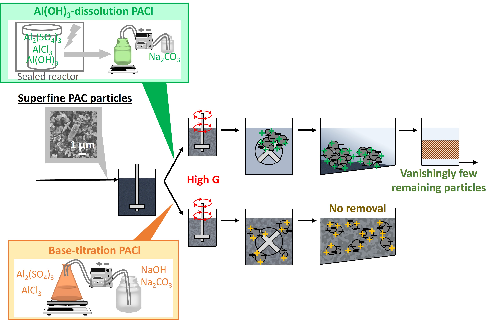
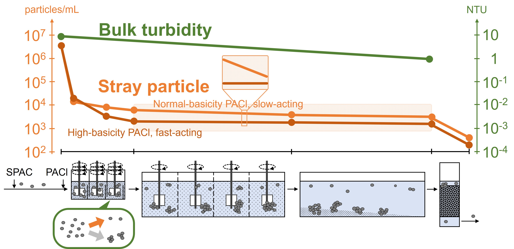
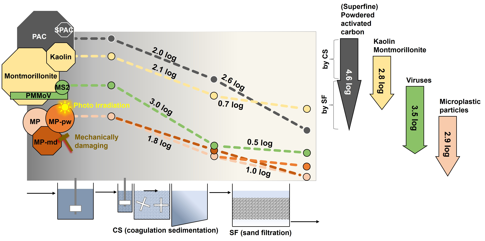

My research aims to understand the mechanisms underlying drinking water
treatment processes and to use that understanding to develop more effective
treatment strategies.
PFAS and Granular Activated Carbon
I study the adsorption, breakthrough, and release of PFAS in granular
activated carbon (GAC), with particular interest in how adsorption history,
water chemistry, and interactions with dissolved organic matter affect
treatment performance.
Adsorption Modeling
I use mechanistic models such as the pore-surface diffusion model (PSDM)
to interpret adsorption kinetics and breakthrough behavior and to connect
laboratory-scale experiments with full-scale treatment processes.
Fine Particle Separation in Drinking Water Treatment
My research has investigated the behavior and removal of fine particles
in conventional drinking water treatment, with particular attention to
coagulation, sedimentation, and rapid sand filtration.
This work began with superfine powdered activated carbon (SPAC) and
progressively expanded from the identification of residual particles
to their control, transport through treatment processes, and comparison
with other types of fine particles.
Identification and characterization of residual SPAC
We first developed an approach to identify, count, and characterize
superfine activated carbon particles remaining after coagulation,
sedimentation, and rapid sand filtration.
Graphical abstract from:
Nakazawa, Y. et al.,
Water Research, 138, 160–168, 2018.
DOI
·
Publication 9
Minimizing residual carbon particles
We then investigated how coagulation conditions and coagulant
properties could be optimized to reduce the number of residual
SPAC particles in treated water.

Graphical abstract from:
Nakazawa, Y. et al.,
Water Research, 147, 311–320, 2018.
DOI
·
Publication 8
Behavior of stray particles through treatment processes
The research was further extended to understand how superfine
particles behave through individual treatment processes and why
a small fraction can remain in the final filtrate.

Graphical abstract from:
Nakazawa, Y. et al.,
Water Research, 190, 116786, 2021.
DOI
·
Publication 6
Extension to diverse fine particles
Finally, we expanded the framework beyond activated carbon and
compared the removal behavior of microplastics, viruses, activated
carbon, and clay particles during conventional drinking water
treatment.

Graphical abstract from:
Nakazawa, Y. et al.,
Water Research, 203, 117550, 2021.
DOI
·
Publication 5